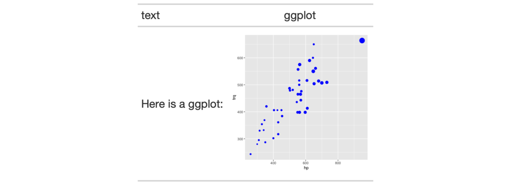

| ggplot_image {gt} | R Documentation |
We can add a ggplot2 plot inside of a table with the help of the
ggplot_image() function. The function provides a convenient way to generate
an HTML fragment with a ggplot object. Because this function is currently
HTML-based, it is only useful for HTML table output. To use this function
inside of data cells, it is recommended that the text_transform() function
is used. With that function, we can specify which data cells to target and
then include a call to ggplot_image() within the required user-defined
function (for the fn argument). If we want to include a plot in other
places (e.g., in the header, within footnote text, etc.) we need to use
ggplot_image() within the html() helper function.
ggplot_image(plot_object, height = 100, aspect_ratio = 1)
plot_object |
A ggplot plot object. |
height |
The absolute height (px) of the image in the table cell. |
aspect_ratio |
The plot's final aspect ratio. Where the height of the
plot is fixed using the |
By itself, the function creates an HTML image tag with an image URI embedded
within (a 100 dpi PNG). We can easily experiment with any ggplot2 plot
object, and using it within ggplot_image(plot_object = <plot object>
evaluates to:
<img cid=<random CID> src=<data URI> style=\"height:100px;\">
where a height of 100px is a default height chosen to work well within the
heights of most table rows. There is the option to modify the aspect ratio of
the plot (the default aspect_ratio is 1.0) and this is useful for
elongating any given plot to fit better within the table construct.
A character object with an HTML fragment that can be placed inside of a cell.

8-3
Other Image Addition Functions:
local_image(),
test_image(),
web_image()
library(ggplot2)
# Create a ggplot plot
plot_object <-
ggplot(
data = gtcars,
aes(x = hp, y = trq,
size = msrp)) +
geom_point(color = "blue") +
theme(legend.position = "none")
# Create a tibble that contains two
# cells (where one is a placeholder for
# an image), then, create a gt table;
# use the `text_transform()` function
# to insert the plot using by calling
# `ggplot_object()` within the user-
# defined function
tab_1 <-
dplyr::tibble(
text = "Here is a ggplot:",
ggplot = NA
) %>%
gt() %>%
text_transform(
locations = cells_body(columns = ggplot),
fn = function(x) {
plot_object %>%
ggplot_image(height = px(200))
}
)